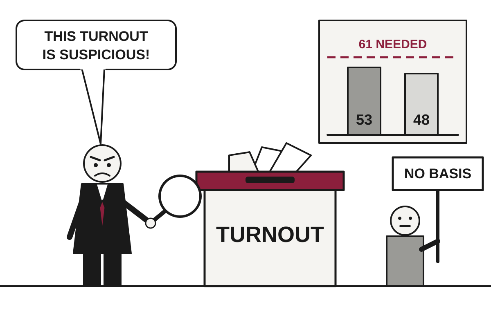

5 Things in 60 Seconds
- Israel's election left neither bloc near the 61 seats needed, with Netanyahu's side at 53 and Eisenkot's at 48, and Likud is alleging fraud that election officials say they cannot find, which is one way to treat a result you dislike.
- Lula beat Flávio Bolsonaro by 4.4 million votes in Brazil's runoff, and Bolsonaro flew to Miami and styled himself 'leader of Brazil' after deleting a letter calling himself 'true president'.
- A Russian drone strike on the Dnipro railway station killed at least 14 people on Thursday, while a US-brokered pause in one town offers the war a small and local footnote of mercy.
- Binance says a hack touched about $6.3bn in assets, blames a compromised engineer's laptop, and promises to cover all losses, proving that billion-dollar vaults still rely on one person's computer.
- The Fed held rates at 3.75% to 4% on a 10-2 vote with both dissenters wanting a hike, while US inflation hit 3.6% and GDP grew 3.4%, so the economy is doing better and costing more.

Netanyahu Loses Majority, Alleges Voters Who Turned Out Were Probably Not Supposed To
After a record 19 Arab-party seats left neither bloc with a majority, the prime minister's Likud accused those parties of stealing the vote, while Israel's own election officials said they found no basis for it.
The wire said: Netanyahu attacks Israel’s Arab parties as he falls short of majority · Al Jazeera
Final results confirmed that Netanyahu's bloc won 53 seats and Eisenkot's bloc won 48, according to the BBC. Translation: a majority needs 61 of the 120 seats, and nobody is close. The Joint List and Ra'am, two Arab-led lists, won a record 19 seats between them after a surge in Arab turnout, which makes them the people both sides now need to think about, whether or not they enjoy it.
Netanyahu's Likud responded by accusing the Arab-led parties of "stealing" the election, according to the BBC. On Thursday it also alleged that voters had been "bribed". The party called the matter a "political earthquake" and "an attack on democracy". Translation: the vote count had been a problem, so the vote itself became one.
Geopolitics

Defeated Bolsonaro Flees to Miami, Promotes Himself From Candidate to 'Leader of Brazil'
Flávio Bolsonaro lost Brazil's runoff by 4.4 million votes, left the country by land and private jet, and issued two letters with two different job titles.
Flávio Bolsonaro, who lost Brazil's presidential runoff on Sunday, landed in Miami on Wednesday and declared himself Brazil's "true president," according to The Guardian. He then deleted that letter and published another in which he was merely "the leader of Brazil." Translation: the title was walked back by roughly one rank, in the manner of a man testing which job description survives a fact-check.
The numbers are not close. Lula won by 4.4 million votes, according to the BBC. Bolsonaro's main complaint is that polling hours were extended on election day, which he called "an electoral fraud unfolding before my eyes." The BBC reported that the extension was requested by both campaigns, and that a BBC Brazil and BBC Verify analysis found only around 34,000 people voted during the extra hours. That is about 0.8 percent of the margin, a gap that even generous accounting struggles to close.
China's Communist Party Expels Record 33 Members, Reports Record Absences, Calls Meeting a Success

The fifth plenum drew 279 Central Committee members, the lowest turnout of Xi Jinping's tenure, as the party stressed discipline ahead of a 2027 leadership reshuffle.
EU Offers Canada Associate Membership, Then Spends a Week Deciding Not to Call It That

At a Montreal summit, von der Leyen kept the title while member states, led by Germany, quietly replaced it with 'an ever closer association' and a 2027 deadline to define it.
A Ceasefire the Size of One Town Coexists With a War the Size of a Country

A US-brokered pause lets Oleshky's trapped residents leave and Kherson exhale, while a drone strike on a Dnipro train station kills at least 14.
Elsewhere on the wire
Husband of one of Modi’s closest advisors questions election integrity Al JazeeraEgypt fines prominent editor Lina Attalah and shuts independent news outlet Mada Masr The GuardianWhat killed 500-plus penguins? How scientists solved the mystery NPR WorldIndia increases growth forecast for fiscal year DWAudio reveals exchanges between Spain train operators and drivers moments before deadly crash BBC WorldAfrica’s ‘unprecedented’ Ebola outbreak could reach UK, says top health official The GuardianAI

Anthropic Files to Go Public, Asks Wall Street to Underwrite $1 Trillion in Compute Bills
The S-1 shows revenue up fourteenfold to $16.3 billion, plus roughly $850 billion in commitments that assume the growth never stops.
Anthropic has filed to go public on the Nasdaq, and the document finally shows what a frontier AI lab costs to run. According to The Verge, revenue grew fourteen times to $16.3 billion between the first half of 2025 and the first half of 2026. The company also reported $1.62 billion in adjusted income for the first half of 2026, after removing an $80 billion loss that the writer describes as largely an accounting matter.
Translation: adjusted income is profit after you subtract the parts of the bill you would prefer not to discuss, such as employee compensation and certain other charges. The Verge's reading is that the answer to whether AI can pay for itself is, for this company and for now, yes. That is a notable change from the usual answer, which was a slide deck.
Google Discovers AI Search Pays Less Than Search, Plans to Fix It With Ads

Alphabet's stock fell sharply after search revenue growth slowed to 12 percent, even as cloud revenue doubled and capital spending hit $51.4 billion in a single quarter.
Microsoft Offers 60,000 Staff a Way Out, Keeps GPUs for Those Who Stay

The company is extending voluntary buyouts to about a quarter of its workforce in four countries, as it tries to pay for AI infrastructure by employing fewer humans.
Nvidia Chief Dined With Suspected Spy as Washington Watched, Said Nothing, Kept Selling Chips
The New York Times reports US agencies believe a Megaspeed executive close to Jensen Huang informed for Beijing, while antitrust regulators separately examine Nvidia's $12.93 billion Hugging Face deal.
Elsewhere on the wire
You don’t need to believe in a god to get a religious exemption from using AI at work TechCrunch AIYou can generate and edit Google Docs files directly in Gemini chats now The Verge AIThe Download: AI agent tracking and climate feedback loops MIT Technology ReviewOpenAI doubles usage limits on Pro plans as competition with Anthropic heats up The DecoderTrump declares robot imports a national security threat Ars Technica AIAWS will be a $1T business, Jassy says. But first, it will spend big. TechCrunch AITechnology

DHS, Which Hid Its Employees' Names, Finds the Internet Has Them All
A leak dubbed Icepick exposed records on more than 41,000 Homeland Security personnel, days after officials spent months widening the definition of doxing.
Records on more than 41,000 Department of Homeland Security employees and contractors were leaked online on Wednesday, according to Ars Technica and the BBC. The archive, named Icepick, was published by the transparency nonprofit Distributed Denial of Secrets (DDoSecrets) and includes email addresses, phone numbers and office addresses. It is, in effect, a company directory that the company never agreed to publish.
The BBC reported that more than 21,000 of the people listed work for Customs and Border Protection and nearly 6,600 for Immigration and Customs Enforcement. Others come from Homeland Security Investigations, the Federal Protective Service and the Cybersecurity and Infrastructure Security Agency. Translation: the agency whose job includes cybersecurity now has some of its cybersecurity staff in the leak.
Reddit Will Require Login, Solving Traffic Problem by Removing Visitors Who Aren't Already Members
CEO Steve Huffman says a logged-in-only Reddit will be better for users, ads and data protection, announced alongside a Q3 report showing search referrals falling by more than 1 million a week.
Trump Declares Factory Robots a Security Threat, Gives Partners 180 Days to Negotiate

A proclamation signed October 28 orders talks on robot imports and keeps tariffs in reserve, a headache for automakers and defense contractors who buy the machines.
GM Pays $220 Million After Selling Drivers' Habits to People Who Raise Premiums

A coalition of 36 state attorneys general says the carmaker passed braking and acceleration data to brokers, and that some drivers paid for it with higher insurance bills.
Elsewhere on the wire
The director of Obsession put a new horror short on YouTube The VergeShow HN: Lasm – Write formally verified webapps in Lean for Node/serverless/edge Hacker NewsMicrosoft fixes a Windows 11 annoyance as PC revenue declines Ars TechnicaIntel says it’s selling every affordable laptop chip it can make The VergeGoogle value plunges by $500bn as AI fears rattle Wall Street BBC TechnologyPico CSS is no longer maintained Hacker NewsMarkets & Economy

ECB Holds Rates at 2.5%, Then Lagarde Announces She Is Leaving to Speak Freely
The central bank paused after two hikes as euro zone inflation hit 3.8%, and its president said she will quit in February 2027 to say things a central banker may not.
The European Central Bank left its deposit rate at 2.5% on Thursday, as markets expected, even though euro zone inflation reached 3.8% last month, the highest since September 2023, according to CNBC. Energy price inflation was 18.8%. The bank held, in other words, while the thing it is supposed to control kept rising, which in central banking is called a measured approach.
Translation: the deposit rate is what banks earn for parking money at the ECB, and it sets the tone for borrowing costs across the bloc. Christine Lagarde said the Governing Council debated a hike but unanimously chose to wait. Her reasoning was that underlying inflation and wages are broadly stable, and she told CNBC the bank is not seeing second-round effects, meaning higher energy costs spreading into wages and everyday prices.
The bank did not ignore the problem so much as note that markets were already tightening on its behalf. Lagarde said the average 10-year sovereign yield had risen about 35 basis points since the last meeting. Translation: a basis point is one hundredth of a percentage point, so governments are paying roughly a third of a point more to borrow for a decade. She attributed part of the rise in long-term borrowing costs to hyperscalers, the giant tech companies, issuing more long-term bonds and competing for the same lenders.
Amazon's Cloud Booms, Its Cash Goes Negative, and Wall Street Chooses to Be Upset

Shares fell more than 6% after hours as AWS grew 39% but capital spending hit $77.3 billion in one quarter and free cash flow turned deeply negative.
Intel Beats Estimates, Then Falls 21% After Telling Investors What Comes Next
The chipmaker posted a strong third quarter, but a weak forecast tied to soaring memory prices and a fatal factory explosion sent shares down more than 20% after hours.
Economy Grows 3.4% as Inflation Also Grows, Fed Promises to Keep Looking at Both

Third-quarter GDP beat forecasts and jobless claims sat near 1960s lows, but September prices rose 0.5% and the Fed has chosen to study the matter further.
| Series | Last | Chg | Period | Trend |
|---|---|---|---|---|
| SPY | $769.36 | −0.38% | +3.73% | |
| Nasdaq | 26,549.85 | +0.27% | +6.72% | |
| VIX | 16.91 | −0.61 | −3.75 | |
| Brent crude | $123.10 | −3.92% | +34.07% | |
| Dollar index | 121.32 | −0.03% | +0.62% | |
| 2Y Treasury | 4.67% | −0.03 | +0.36 | |
| 10Y Treasury | 5.05% | +0.06 | +0.40 | |
| Fed Funds | 3.88% | ±0.00 | +0.25 | |
| CPI inflation (YoY) | 3.74% | +0.34 | +1.30 | |
| Unemployment | 4.20% | +0.10 | +0.10 |
Elsewhere on the wire
Biggest-ever crypto hack impacts $6.3 billion as Binance works to contain fallout CNBC MarketsAspen Neuroscience prices IPO at $15 per share on Nasdaq Investing.comFederal Reserve Board announces approval of application by The Bank of Nova Scotia Federal ReserveA Starbucks turnaround is brewing — but perhaps not quickly enough for investors MarketWatchBayer wins Roundup weedkiller cancer trial while awaiting settlement ruling Investing.comHow elections worldwide are testing Trump’s influence abroad CNBC MarketsPhoto credits
- Defeated Bolsonaro Flees to Miami, Promotes Himself From Candidate to 'Leader of Brazil': Private jet at Glasgow Airport - geograph.org.uk - 5440951 by Thomas Nugent, CC BY-SA 2.0, via Wikimedia Commons
- China's Communist Party Expels Record 33 Members, Reports Record Absences, Calls Meeting a Success: Beijing, Tiananmen Square, Great Hall of the People (6170353894) by Arian Zwegers, CC BY 2.0, via Wikimedia Commons
- EU Offers Canada Associate Membership, Then Spends a Week Deciding Not to Call It That: European Union Flags 2 by Thijs ter Haar, CC BY 2.0, via Wikimedia Commons
- A Ceasefire the Size of One Town Coexists With a War the Size of a Country: Frome railway station platform - geograph.org.uk - 4654338 by Jaggery, CC BY-SA 2.0, via Wikimedia Commons
- Google Releases Gemini 4 Carbon Two Weeks After Argon, Lets Almost Nobody Use It: Front of server racks at NERSC by Derrick Coetzee from Berkeley, CA, USA, CC0, via Wikimedia Commons
- Anthropic Files to Go Public, Asks Wall Street to Underwrite $1 Trillion in Compute Bills: Datacenter Server Racks (22370909788) by Carl Lender from Sunrise, USA, CC BY 2.0, via Wikimedia Commons
- Google Discovers AI Search Pays Less Than Search, Plans to Fix It With Ads: Google Building CL2 from CL5 nearby Shoreline Park by Runner1928, CC BY-SA 3.0, via Wikimedia Commons
- Microsoft Offers 60,000 Staff a Way Out, Keeps GPUs for Those Who Stay: Building 92 of Microsoft Redmond Campus - panoramio by Jiaqian AirplaneFan, CC BY 3.0, via Wikimedia Commons
- Nvidia Chief Dined With Suspected Spy as Washington Watched, Said Nothing, Kept Selling Chips: Datacenter Server Racks (22370909788) by Carl Lender from Sunrise, USA, CC BY 2.0, via Wikimedia Commons
- Binance Says $6.3bn Affected in Hack, Blames Engineer's Laptop, Promises to Cover It: Old Laptop Used for Home Security Monitoring by Intel Free Press, CC BY-SA 2.0, via Wikimedia Commons
- DHS, Which Hid Its Employees' Names, Finds the Internet Has Them All: Cohen Federal Building Jul 2025 01 by Epicgenius, CC BY-SA 4.0, via Wikimedia Commons
- Trump Declares Factory Robots a Security Threat, Gives Partners 180 Days to Negotiate: Robot arm operates machine in factory setting by Shixart1985, CC BY 2.0, via Wikimedia Commons
- GM Pays $220 Million After Selling Drivers' Habits to People Who Raise Premiums: Car Dashboard at Night by ParentingPatch, CC BY-SA 3.0, via Wikimedia Commons
- Fed Holds Rates, Reshuffles Calendar, Seating Chart, and Everyone's Ability to Predict Anything: Eccles Building (26088200676) by Federalreserve, Public domain, via Wikimedia Commons
- ECB Holds Rates at 2.5%, Then Lagarde Announces She Is Leaving to Speak Freely: European Central Bank Frankfurt Germany 18 Feb 2023 by Norbert Nagel, CC BY-SA 4.0, via Wikimedia Commons
- Amazon's Cloud Booms, Its Cash Goes Negative, and Wall Street Chooses to Be Upset: Data center infrastructure in the United States by DOE/National Renewable Energy Laboratory (NREL), Public domain, via Wikimedia Commons
- Economy Grows 3.4% as Inflation Also Grows, Fed Promises to Keep Looking at Both: Gas station with pricing sign by Moonstruck Exploring, CC BY-SA 4.0, via Wikimedia Commons